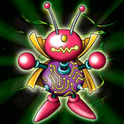

Oscillo Hero #2

Description: "Increases 800 bonus points in battles against FISH monsters."
STATS
ATK: 1000
DEF: 500DECK COST
Deck Cost per Card: 20EFFECT NOT IMPLEMENTED
Fusion List (33 Possible Fusions)
- Oscillo Hero #2 + Air Marmot of Nefariousness = Tripwire Beast
- Oscillo Hero #2 + Baby Dragon = Thunder Dragon
- Oscillo Hero #2 + B. Dragon Jungle King = Twin-Headed Thunder Dragon
- Oscillo Hero #2 + Blackland Fire Dragon = Thunder Dragon
- Oscillo Hero #2 + Crawling Dragon #2 = Twin-Headed Thunder Dragon
- Oscillo Hero #2 + Crawling Dragon = Twin-Headed Thunder Dragon
- Oscillo Hero #2 + Curse of Dragon = Twin-Headed Thunder Dragon
- Oscillo Hero #2 + Darkfire Dragon = Thunder Dragon
- Oscillo Hero #2 + Dragon Zombie = Twin-Headed Thunder Dragon
- Oscillo Hero #2 + Jellyfish = Bolt Escargot
- Oscillo Hero #2 + Kairyu-Shin = Twin-Headed Thunder Dragon
- Oscillo Hero #2 + Kappa Avenger = Bolt Escargot
- Oscillo Hero #2 + Koumori Dragon = Thunder Dragon
- Oscillo Hero #2 + Lesser Dragon = Thunder Dragon
- Oscillo Hero #2 + Liquid Beast = Bolt Escargot
- Oscillo Hero #2 + Metal Dragon = Twin-Headed Thunder Dragon
- Oscillo Hero #2 + Milus Radiant = Tripwire Beast
- Oscillo Hero #2 + Mystic Lamp = The Immortal of Thunder
- Oscillo Hero #2 + Mystical Elf = The Immortal of Thunder
- Oscillo Hero #2 + Nemuriko = The Immortal of Thunder
- Oscillo Hero #2 + Ooguchi = Bolt Escargot
- Oscillo Hero #2 + Petit Dragon = Thunder Dragon
- Oscillo Hero #2 + Sectarian of Secrets = The Immortal of Thunder
- Oscillo Hero #2 + Spike Seadra = Twin-Headed Thunder Dragon
- Oscillo Hero #2 + Stone D. = Twin-Headed Thunder Dragon
- Oscillo Hero #2 + Sword Arm of Dragon = Twin-Headed Thunder Dragon
- Oscillo Hero #2 + The Bewitching Phantom Thief = The Immortal of Thunder
- Oscillo Hero #2 + The Melting Red Shadow = Bolt Escargot
- Oscillo Hero #2 + Thousand Dragon = Twin-Headed Thunder Dragon
- Oscillo Hero #2 + Thunder Dragon = Twin-Headed Thunder Dragon
- Oscillo Hero #2 + Turtle Raccoon = Bolt Escargot
- Oscillo Hero #2 + Turu-Purun = Bolt Escargot
- Oscillo Hero #2 + Wicked Dragon with the Ersatz Head = Thunder Dragon